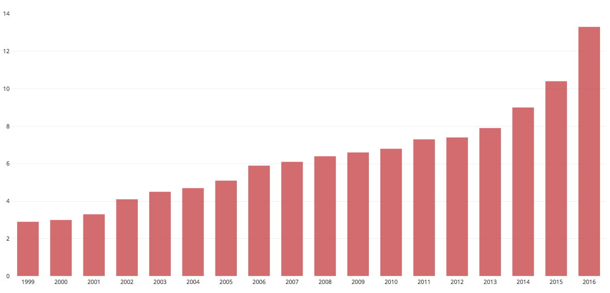

OXYLAB
THE OPIOID EPIDEMIC
In the 1990s, healthcare providers began to heavily prescribe Opioids. This surge in pain relief prescriptions resulted in an increase in the drug’s misuse. In 2016, 116 people died of opioid overdoses daily. Consequences of these highly addictive drugs are prenatal use leading to infant withdrawal, organ malfunction, and fatal overdose. Although every demographic is affected by the epidemic, young adults are the most at risk due to their need to relieve stress, pain, as well as their desire to experiment. Unfortunately, opioid death rates continue to climb to this day.
MAP AND DATA
Opioid overdose death rate by state and county.
Opioid overdose death rate per 100,000 population

data provided by United States Census bureau
ABOUT THE FOUNDER
|
My name is Magda Gourinchas and I am the founder of Oxylab. In my junior year of highschool I was exposed to victims of the opioid epidemic and decided to take action by creating this website. I believe this website has the power to help addicts, those who love them, and researchers. |